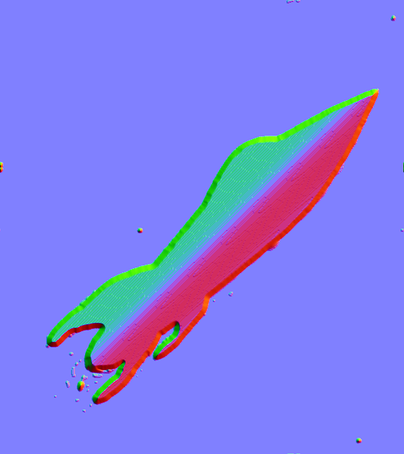

This project aims to create an interactive system featuring spaceship art.
This system enables users to adjust the specular and reflection properties of the spaceship's body
in real time through mouse input. As users interact with the spacecraft, fast-moving light effects
simulate the intensity of interstellar travel. At the same time, the shader dynamically adapts to
increase speed, amplifying the sensation of high-velocity motion.
Visual Effect
Starting with a prototype using Blender's pre-built shaders, this project aims to bring the
spaceship to life by blending interactive controls with realistic reflections and lighting.
The result will be a visually engaging, interactive experience that bridges static art with the
immersive feel of space exploration. More project assets can be found there.
Fig 1. Art Created By Calsidyrose.
Fig 2. Depth map.

Fig 3. Normal map.
Fig 4. The rocket extracted (shadow removed).
Fig 5. Background.
Implement
Our Final goal is to recreate this effect with Shadertoy/WebGL by building custom shaders.